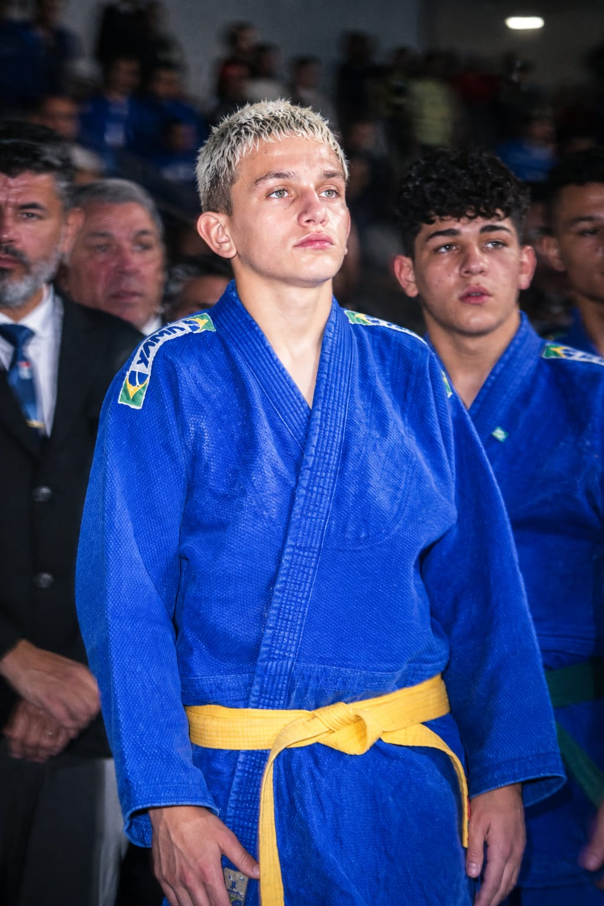

01 / Pessoas
Sobre nós
Três estudantes, diferentes interesses e trajetórias que se encontram no IFPR.

Estudante · Tecnologia
Isaque Tehlen Souza
“Sou um garoto introvertido porém muito inteligente e sempre em busca de novos desafios.”
Ler a história de Isaque
Estudante · Esporte
Bruno Miguel B. Polla
“Sou um garoto simples, porém simpático e atencioso, tenho hobbies e objetivos.”
Ler a história de Bruno
Estudante · Esporte
Mayki R. Klein
“Sou um garoto extrovertido que busca mais amizades a cada dia.”
Ler a história de Mayki